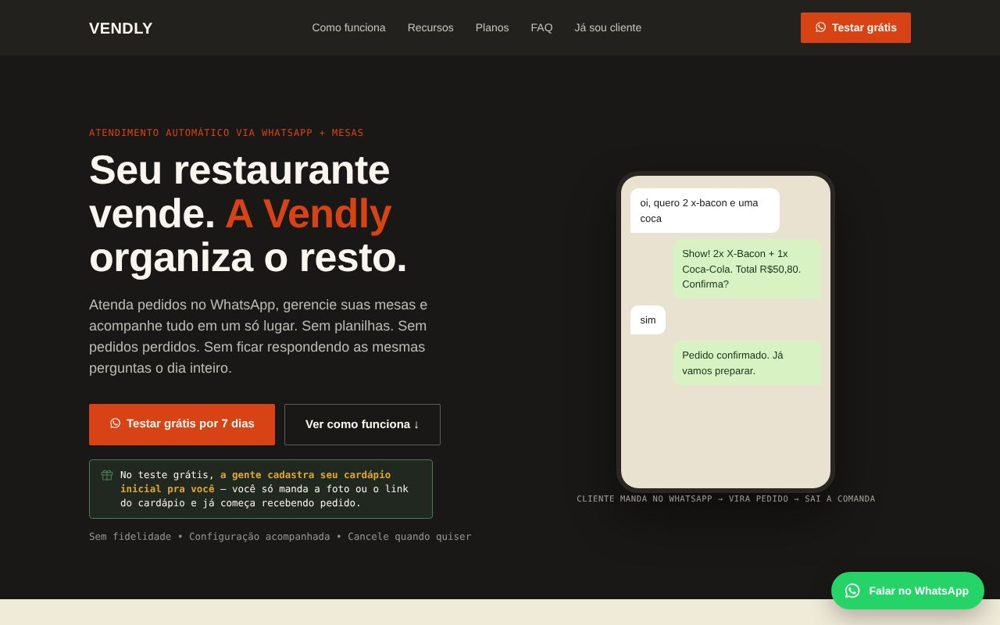

Projeto principal · piloto validado · incubadora UTFPR
Vendly
Atendente de IA no WhatsApp para restaurantes. O cliente pede em linguagem natural, a IA confere com o cardápio real, registra o pedido e a comanda sai impressa na cozinha. Também tem controle de mesas pro atendimento presencial, no mesmo estoque e painel.
Fluxo Backend:
WhatsApp (Evolution API)
LLM Tool Use (JSON)
Recálculo Determinístico
PostgreSQL (Row Lock)
Comanda / Painel
- Preço, total e troco sempre recalculados pelo código, nunca pelo valor que a IA gerou
- Saída da IA em JSON estruturado (tool use) pra evitar respostas inconsistentes
- Multiempresa com dados isolados por cliente, login de atendente e planos
- PostgreSQL com transações e trava de linha pra pedidos simultâneos na mesma mesa
- Deploy em VPS Linux com Docker e pm2; validado em piloto num restaurante local e hoje em avaliação no Hotel Tecnológico da UTFPR
- Auditado pelo ATLAS, meu red team: 16 de 16 sondas bloqueadas (incluindo Prompt Injection na IA)
- Node.js
- TypeScript
- PostgreSQL
- Docker
- API da Anthropic
- Evolution API